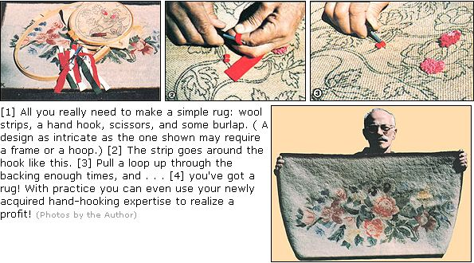

For a foor-warming - and perhaps even budget-boosting - craft that's easy to learn, get . . . .
On a frosty morning, when you start to swing your dreading-to-touch-the-cold-floor feet out of your snug bed, wouldn't it be nice to know there's a cuddly hooked rug waiting for them? That floor covering can warm you inside, too . . . if it's an "heirloom" that you made yourself!
And you can create a cozy treat for your toes, because hooking requires neither special needle-working ability nor a big budget. If you've got a rug-sized scrap of burlap to use as backing, some odds and ends of old wool clothing to recycle, a dollar or two to spend on the one necessary tool, and a few stay-at-home hours to spare . . . you can soon be a homestead rug hooker.
What's more, if you become really good at this craft, you can use it to turn a profit. There's quite a demand for fine handmade floor coverings, you see . . . and the price tags on quality hooked rugs can run from $100 to $1,000.
HOW TO GET HOOKING
There're about as many techniques for hooking a rug as there are materials available to do it with . . . so to narrow the field, a beginner might be wisest to learn hand-hooking first, using salvaged or inexpensive burlap and wool strips. This is by far the simplest and least costly method.
To get started, buy a hand hook (it'll cost around $1.25) from a crafts supply store. Then scout out some nice scraps of wool fabric (you'll need half a pound for each square foot of your rug), either in your own closets and basement or at a thrift shop or flea market. Wool is far superior to any other rugmaking material, simply because it wears so well. What's more, it's easily dyed . . . so you needn't limit your color scheme to the shades you find. If you do plan to dye your raw material, though, you'll want to buy or scrounge as much light-colored (preferably white or beige) fabric as you can.
DESIGN PREPARATION
In order to create a pleasing rug, you'll need to work from a well-planned, interesting design. That's interesting, not intricate. . . so for your maiden attempt either beg, borrow, or sketch your own uncomplicated floral or geometric pattern, perhaps one that will require various hues of just one color. It's all too easy for a beginner to get bogged down in a design - no matter how beautiful - that calls for lots of color and line changes. Keep your first attempt simple, then, and work up to complex details gradually as you become more proficient at the technique.
Once you've figured out your motif, decide on the dimensions you want your rug to have (the smaller the better to start with . . . and remember that a square or rectangular shape will make for easy hemming when you're done). Then figure in a 3" border all around - for a rim that can be folded under later - and trim your burlap to size. Cover the perimeter of the backing with sturdy masking or rug-hemming tape, to help it hold its shape as you work . . . and use an indelible marker to trace the pattern you've chosen in the center of your soon-to-be rug.
Now, put the backing aside, pull out your collection of wool, and cut the material into strips - each about 4" X 16" - to prepare it for its "bath".
COLOR CULTIVATION
Dyeing fabric is a separate (and somewhat time-consuming) art in itself . . . one which requires patience and a willingness to make (and clean up) a mess. Of course, you don't have to change the color of the wool you've found, but why not give it a try? After you've had a bit of experience, you'll undoubtedly come up with dyeing techniques of your own that can only enhance the quality of your rugs. Meanwhile, here's a way to begin . . . by turning out several shades of one basic color.
First off, be sure to allow yourself at least two hours of kitchen time. Next, round up everything you'll need: the mounds of wool strips you've cut . . . one large (at least two-quart) porcelain pot . . . three to five additional pans (depending upon how many different tints you wish to produce) . . . several wooden stirring utensils . . . table salt . . . white vinegar . . . measuring spoons and cups . . . and a package of dye (it can be bought inexpensively at a variety store). Also, you'll be wise to outfit yourself in a pair of rubber gloves and a long apron . . . one you won't mind accidentally splattering with permanent color!
OK, you're ready for action! Make the basic dyeing solution (BDS) by dissolving one packet of dye in 1-1/4 quarts (5 cups) of hot water. Allow this solution time to cool while you set out the other pans on your stove. In each one, place a goodly number of wool strips . . . pour in enough water to cover the material . . . and add 1 teaspoon of salt and 1 tablespoon of vinegar. Make sure the cloth is thoroughly soaked before going on to the next step.
By this time the BDS should be sufficiently cooled so that you can add it to the clothholding pans in the following manner: Let's rate the shades of the color you're using, from lightest to darkest, on a scale of 1 to 5. To achieve the palest tint - No. 1 - add 2/3 teaspoon of BDS to a pan . . . for No. 2 add 2 teaspoons . . . for No. 3 add 2 tablespoons. . . for No. 4 add 4 tablespoons . . . and for No. 5 add 8 tablespoons.
When the "dye is cast", boil the pan mixtures for about 30 minutes, making sure to stir each brew frequently with a wooden utensil. This done, remove the rejuvenated strips from the liquid (watch out . . . they're hot!) and thoroughly rinse each batch in cold water. Then spread them to dry on a surface - such as plastic, glass, enamel, or porcelain - that'll neither absorb, nor change the color of, the dye . . . or fasten them to a line, using plastic clothespins.
GET THIS SHOW ON THE ROAD
After your wool has dried, cut the 16"-long pieces into narrower strips .. . say 1/4" to 3/8" wide. Then get out the hand hook, and spread your prepared backing right side up . . . since you'll be bringing loops from underneath the surface with the hook to form pile on top.
To make the loops, hold the tool above the burlap with your right hand (or left if you're a southpaw) and the wool strip in your other hand below the foundation. Now, simply push the hook down through a hole in the mesh . . . guide the material into it . . . and pull a loop up through the backing to the height you want the nap to be (1/4" to 3/8" is ideal). Then skip one or two mesh holes and force the hook back into the next one to pick up another loop. With practice, you'll soon be able to make all your loops the same height . . . but if a few are noticeably taller than others when you finish your rug, it will do no harm to trim them.
All the ends of your strips should start and finish on the surface of your rug, so that they can be hidden and secured in the thick pile. Each time you start to run out of wool, bring the end of the strand you've been working with to the top . . . insert your hook into the same hole . . . and pull up the beginning of the next strip. What you'll have, then, is the tail end of one piece of wool and the leading end of another surfacing through one opening. Clip them both to loop height.
It's a good idea to hook the design itself first . . . then, once that's completed, you can fill in the background. And when you're done "looping", turn the 3" border of unhooked burlap under . . . miter down the corners . . . and use heavy thread to stitch the hem to the underside of your rug.
HOOK ON
Once you get the hang of it, you may want to experiment with other techniques of rug hooking, such as "latching" and "punching". And someday, when you become expert enough to sell your creations, you just might thank those cold feet of yours for getting you hooked on rugs!
EDITOR'S NOTE: For more information, check libraries and bookstores . . . there's a wealth of printed material on rug hooking available. And if you haven't a crafts supply store in your area, here're a couple that'll be glad to send you price lists of what they sell through the mail: The Ruggery, Dept. TMEN, 565 Cedar Swamp Road, Glen Head, New York 11545 . . . and The Earth Guilty, Dept. TMEN, 1 Tingle Alley, Asheville, North Carolina 28801.
|
 |
|
|